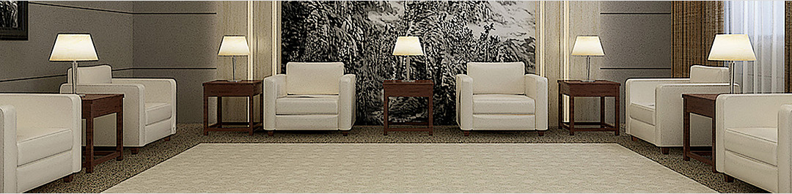
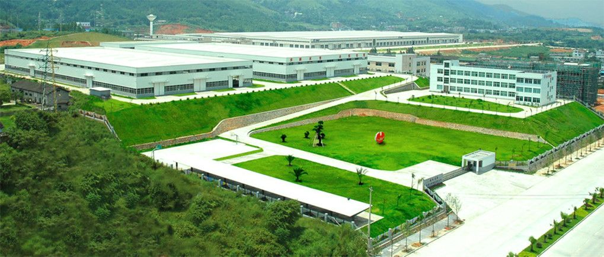

公司简介

公司简介
北京尚邦弘业商贸有限公司（山东红叶地毯厂北京办事处）主要生产高档丝毛合织手工、机织地毯;目前是集地毯及其材料的专业设计、研发、生产、销售和服务于一体的专业地毯制造商。公司规模位于中国地毯行业前列，是目前国内最具实力、最具规模的专业地毯制造商之一。所生产的手工地毯、机织威尔顿地毯、簇绒地毯总销量位居国内前三甲; 主要产品涵盖办公方块毯、办公满铺地毯、高级手工羊毛地毯、高级手工真丝地毯、高级手工艺术挂毯、威尔顿地毯、簇绒地毯、阿克明斯特地毯、薄型丝毯、单面威尔顿和尼龙印花地毯，产品适用于商用、工程用、民用等多种领域，产品的综合市场占有率、市场销售份额、市场覆盖面在全国同行业一直名列前茅，已成为中国地毯行业中的排头兵。  公司设有产品研发中心，具有先进的地毯图案设计系统和专业的设计队伍。不断推出适应最新潮流的地毯，为当今客户追求个性化图案提供方案设计。设计师根据客户设计理念和欣赏品味，勘测实际空间，为各种环境设计不同风格的地毯方案，为客户售前提供图案设计及生产施工咨询服务等。
公司先后荣获“农业产业化龙头企业”、“农行AAA级信用客户”、 “国家外商投资先进企业”、 “最佳信用企业”等多项殊荣;公司生产的“红叶”牌地毯，是国家免检产品、著名商标、中国环保地毯，2010年1月被国家工商总局认定为“中国驰名商标”;研发产品先后获科委星火科技奖、新产品开发奖、省优质产品奖，并已通过ISO9001、ISO14001等多项国际、国内认证。
公司始终遵循“诚实、守信、勤劳、创新”的经营理念。始终视用户为上帝，视产品质量为生命，靠企业信誉求发展。红叶牌地毯一定会给您的生活带来永远的典雅和美丽。
我公司较早在北京设立地毯销售分公司，是北京和北方地区主要地毯经营单位之一，公司根据市场形势的发展变化，根据地毯原料的特性，为广大消费者提供款式多样，色彩丰富，价廉物美的各款地毯类产品，伴您度过美好的生活。
同时，我公司为满足北京经济迅猛发展的趋势，近年来进行了结构性的调整，为市场提供更为圆满的售前、售中、售后服务，承接地毯的设计、铺设、清洗、维修等业务。
触屏版
|
电脑版
京ICP备11048675号-1 Copyright © 2004-2013 www.hongyedt.com ALL Rights Reserved
公司简介
企业荣誉
厂房设备
技术中心
地毯资讯
产品展示
经典案例
工程部
设计部
售后服务
联系我们